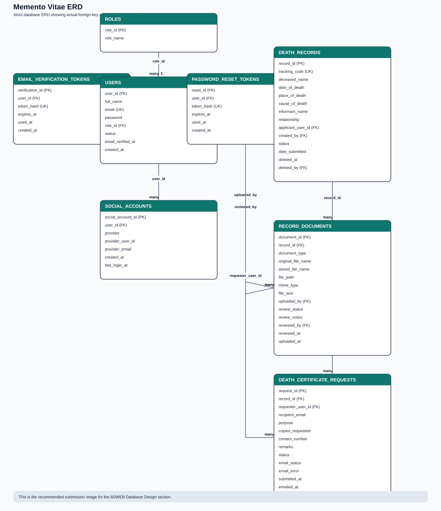
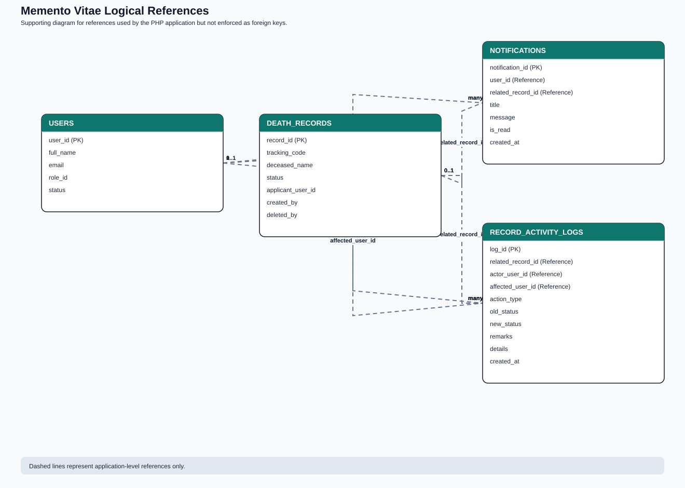

Prepared for the 6DWEB documentation requirement under Database Design, before the 6IMAN section.

This is the strict database ERD showing the core schema relationships for submission.

This supporting diagram shows app-level relationships used by the PHP code but not enforced as foreign keys in the SQL dump.
| Field | Type | Key | Description |
|---|---|---|---|
| role_id | int(11) | PK | Unique role ID. |
| role_name | varchar(50) | - | Role name such as Admin, Barangay Staff, or User. |
| Field | Type | Key | Description |
|---|---|---|---|
| user_id | int(11) | PK | Unique user ID. |
| full_name | varchar(100) | - | Full name of the account owner. |
| varchar(120) | UK | User email address. | |
| password | varchar(255) | - | Hashed password. |
| role_id | int(11) | FK | Links the user to a role. |
| status | varchar(20) | - | Account status. |
| email_verified_at | datetime | - | Date and time the email was verified. |
| created_at | timestamp | - | Account creation date and time. |
| Field | Type | Key | Description |
|---|---|---|---|
| record_id | int(11) | PK | Unique death record ID. |
| tracking_code | varchar(20) | UK | Generated public reference code. |
| deceased_name | varchar(150) | - | Name of the deceased. |
| date_of_death | date | - | Date of death. |
| place_of_death | varchar(150) | - | Place where death occurred. |
| cause_of_death | varchar(200) | - | Cause of death. |
| informant_name | varchar(150) | - | Name of the informant. |
| relationship | varchar(50) | - | Informant's relationship to the deceased. |
| applicant_user_id | int(11) | FK | User assigned as applicant. |
| created_by | int(11) | FK | Staff/admin who created the record. |
| status | varchar(30) | - | Workflow status of the record. |
| date_submitted | timestamp | - | Submission timestamp. |
| deleted_at | datetime | - | Soft-delete timestamp for archived records. |
| deleted_by | int(11) | FK | User who archived the record. |
| Field | Type | Key | Description |
|---|---|---|---|
| document_id | int(11) | PK | Unique document ID. |
| record_id | int(11) | FK | Linked death record. |
| document_type | varchar(80) | - | Type of uploaded document. |
| original_file_name | varchar(255) | - | Original upload filename. |
| stored_file_name | varchar(255) | - | Saved filename on the server. |
| file_path | varchar(255) | - | File storage path. |
| mime_type | varchar(120) | - | MIME type of the file. |
| file_size | int(11) | - | File size in bytes. |
| uploaded_by | int(11) | FK | User who uploaded the document. |
| review_status | varchar(30) | - | Review result for the document. |
| review_notes | text | - | Reviewer comments or replacement notes. |
| reviewed_by | int(11) | FK | Staff/admin who reviewed the file. |
| reviewed_at | datetime | - | Review timestamp. |
| uploaded_at | timestamp | - | Upload timestamp. |
| Field | Type | Key | Description |
|---|---|---|---|
| request_id | int(11) | PK | Unique request ID. |
| record_id | int(11) | FK | Approved death record being requested. |
| requester_user_id | int(11) | FK | User who submitted the request. |
| recipient_email | varchar(190) | - | Registry office email recipient. |
| purpose | varchar(150) | - | Purpose of the request. |
| copies_requested | int(11) | - | Number of certificate copies requested. |
| contact_number | varchar(40) | - | Contact number of the requester. |
| remarks | text | - | Additional notes for the request. |
| status | varchar(30) | - | Current request status. |
| email_status | varchar(30) | - | Email delivery status. |
| email_error | text | - | Email error details if sending fails. |
| submitted_at | timestamp | - | Request submission timestamp. |
| emailed_at | datetime | - | Timestamp when email was sent. |
| Field | Type | Key | Description |
|---|---|---|---|
| verification_id | int(11) | PK | Unique verification token ID. |
| user_id | int(11) | FK | Linked user. |
| token_hash | char(64) | UK | Hashed email verification token. |
| expires_at | datetime | - | Token expiration date and time. |
| used_at | datetime | - | Timestamp when the token was used. |
| created_at | timestamp | - | Token creation timestamp. |
| Field | Type | Key | Description |
|---|---|---|---|
| reset_id | int(11) | PK | Unique reset token ID. |
| user_id | int(11) | FK | Linked user. |
| token_hash | char(64) | UK | Hashed password reset token. |
| expires_at | datetime | - | Token expiration date and time. |
| used_at | datetime | - | Timestamp when the token was used. |
| created_at | timestamp | - | Token creation timestamp. |
| Field | Type | Key | Description |
|---|---|---|---|
| social_account_id | int(11) | PK | Unique social account link ID. |
| user_id | int(11) | FK | Linked local user account. |
| provider | varchar(30) | UK composite | Social login provider name. |
| provider_user_id | varchar(191) | UK composite | Provider-side account ID. |
| provider_email | varchar(191) | - | Email returned by the social provider. |
| created_at | timestamp | - | Link creation timestamp. |
| last_login_at | timestamp | - | Last provider login timestamp. |
| Field | Type | Key | Description |
|---|---|---|---|
| notification_id | int(11) | PK | Unique notification ID. |
| user_id | int(11) | Reference | Recipient user. |
| related_record_id | int(11) | Reference | Related death record, if any. |
| title | varchar(150) | - | Notification title. |
| message | text | - | Notification body. |
| is_read | tinyint(1) | - | Read flag. |
| created_at | timestamp | - | Creation timestamp. |
| Field | Type | Key | Description |
|---|---|---|---|
| log_id | int(11) | PK | Unique activity log ID. |
| related_record_id | int(11) | Reference | Linked death record. |
| actor_user_id | int(11) | Reference | User who performed the action. |
| affected_user_id | int(11) | Reference | User affected by the action. |
| action_type | varchar(50) | - | Type of logged action. |
| old_status | varchar(30) | - | Previous record status. |
| new_status | varchar(30) | - | New record status. |
| remarks | text | - | Additional note for the activity. |
| details | text | - | Description of the action performed. |
| created_at | timestamp | - | Log creation timestamp. |